Mes Passions
La préparation de gâteaux : J'aime explorer la pâtisserie, tester de nouvelles recettes et créer des gâteaux uniques pour des occasions spéciales.
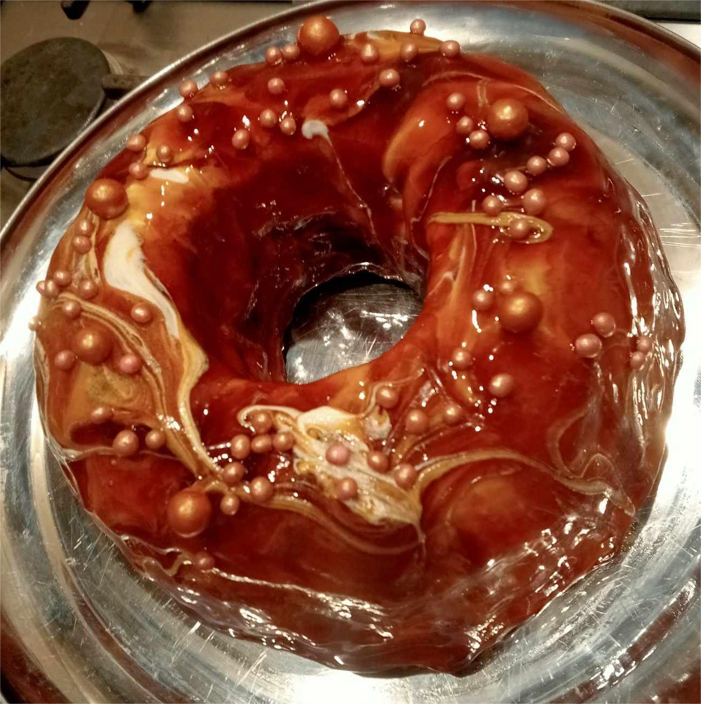 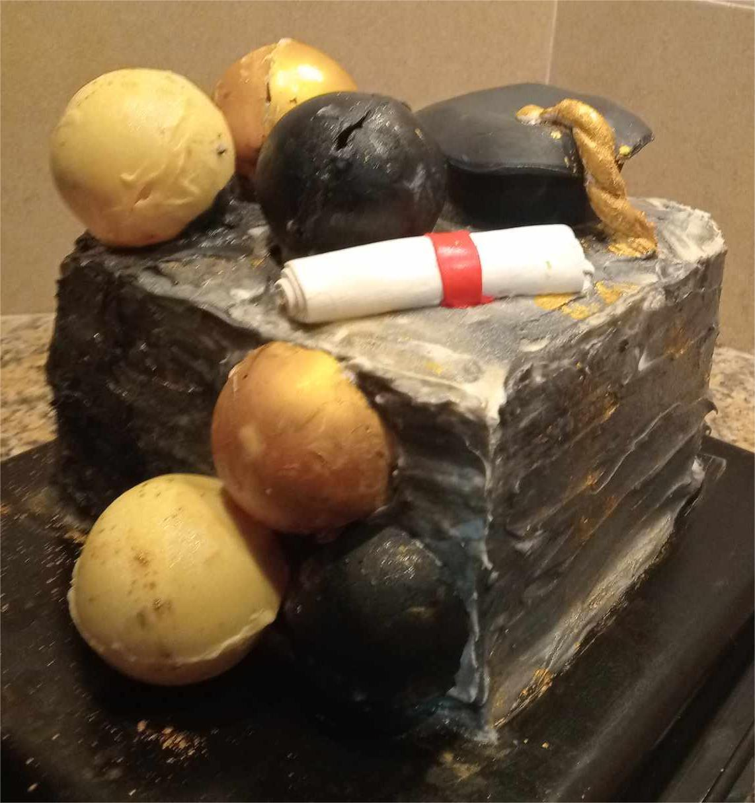 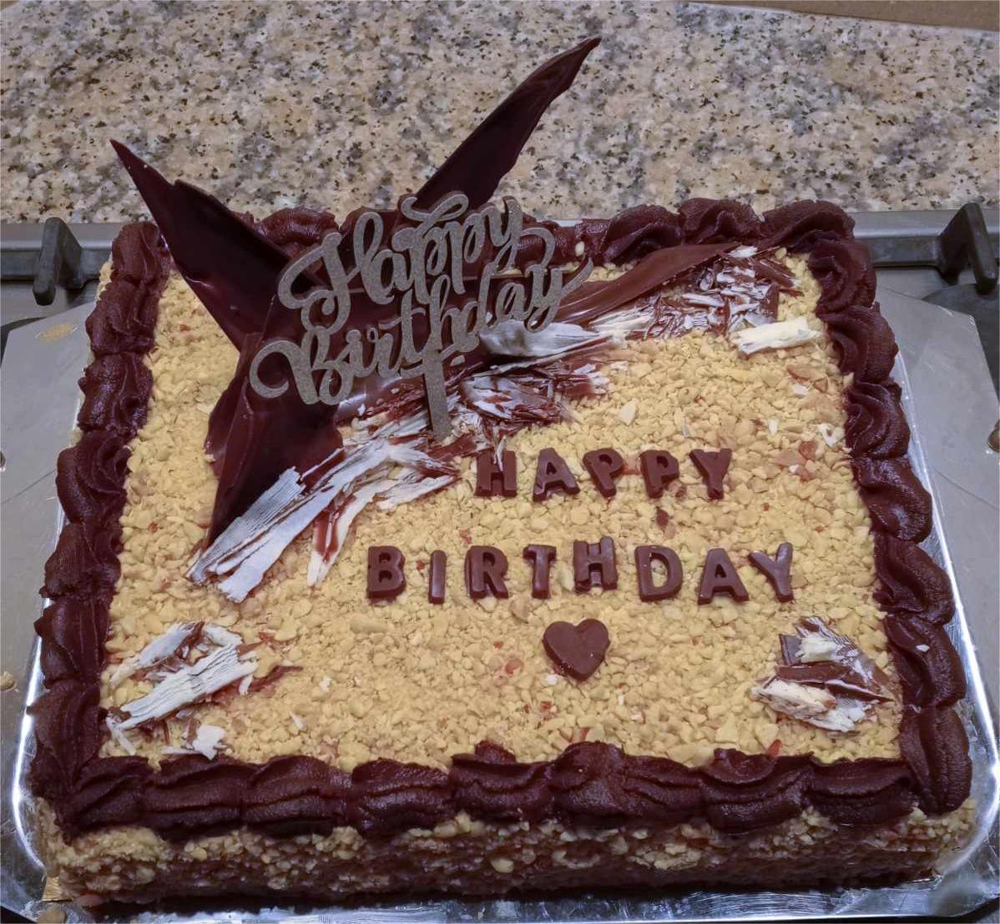 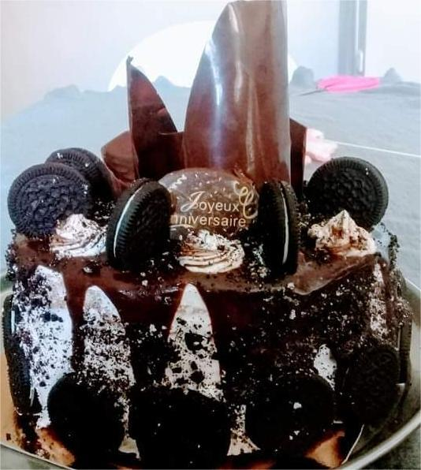 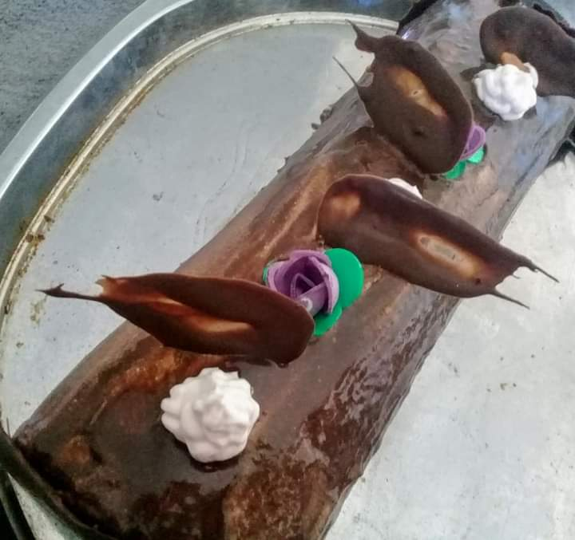 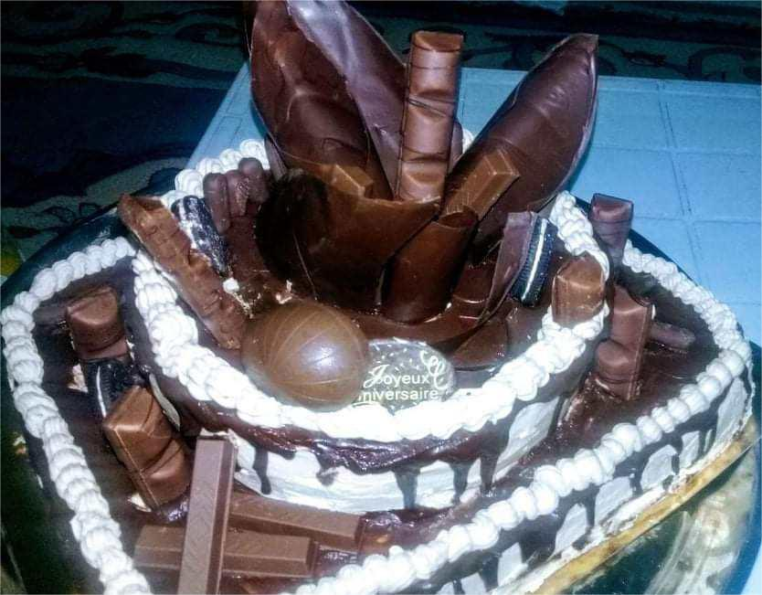 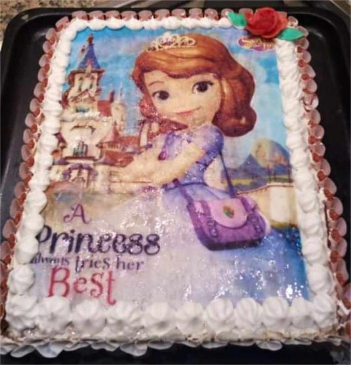La broderie : Un art qui demande patience et précision, la broderie me permet de personnaliser des textiles avec des motifs créatifs.
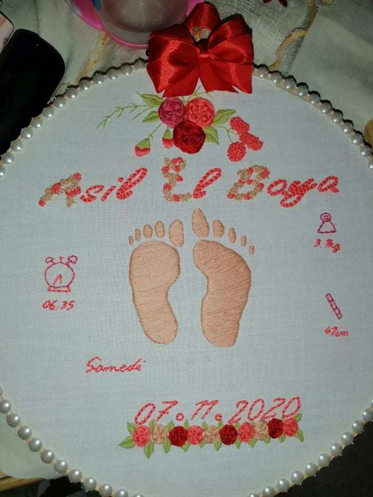 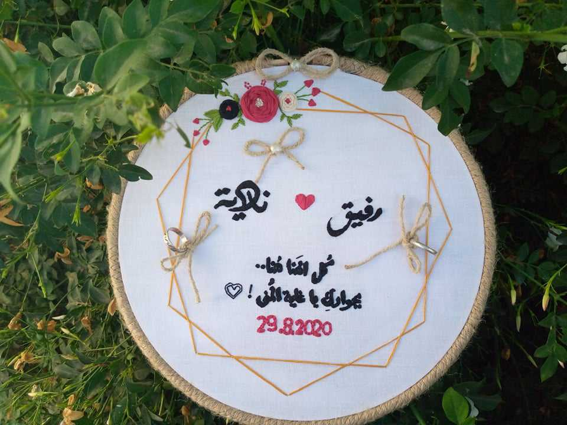 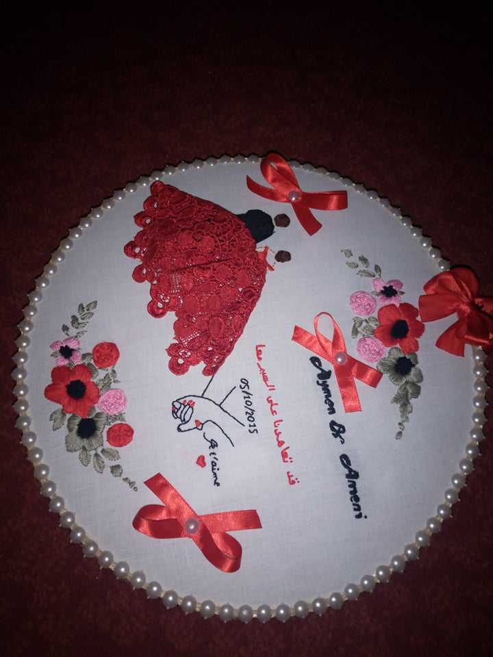 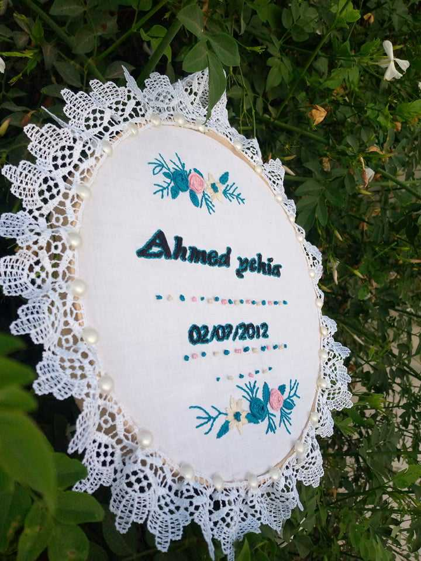 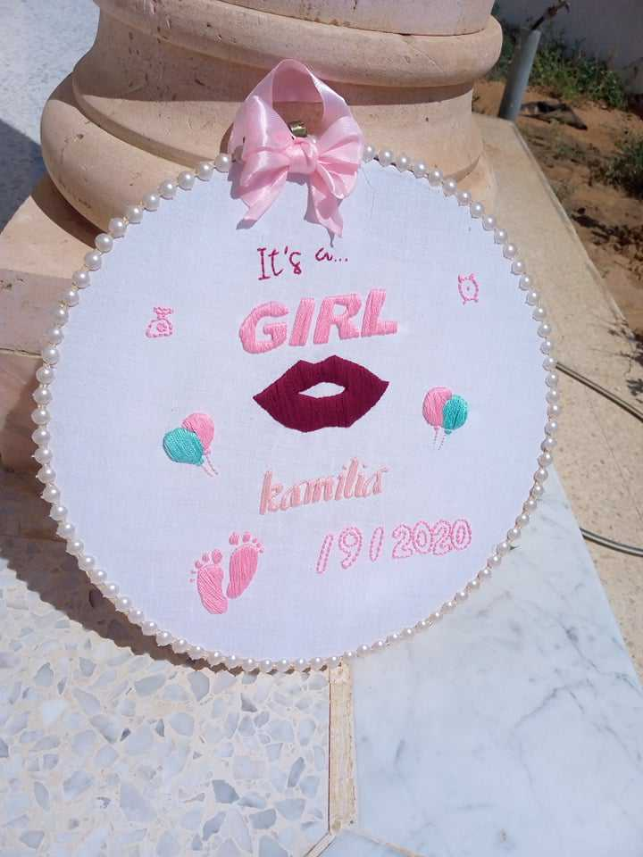 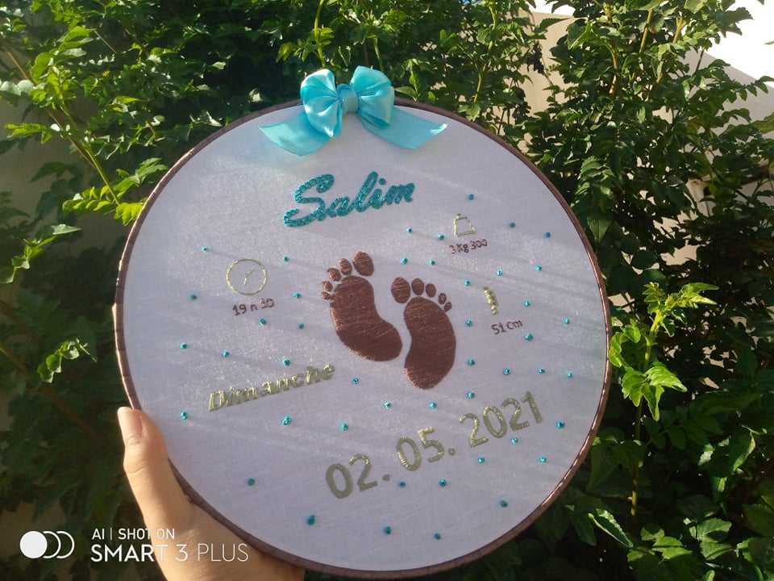Le crochet : Le crochet me permet de confectionner des pièces uniques, des décorations pour la maison et des vêtements faits main.
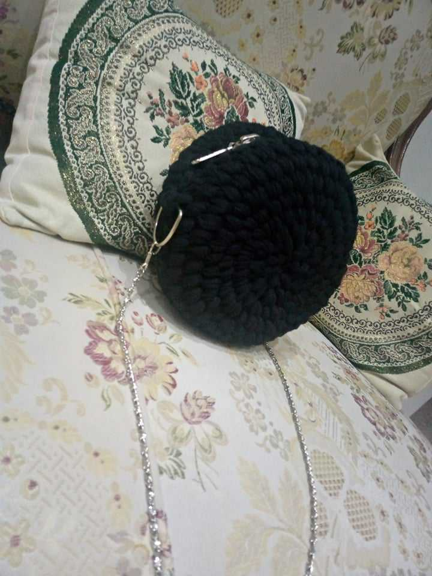Mes Sports Préférés
J'apprécie particulièrement les sports suivants pour garder la forme et l'équilibre : La marche
Mes Qualités
Voici quelques-unes des qualités qui me définissent :
éative et passionnée
Organisée et patiente
Curieuse d'apprendre de nouvelles compétences
Persévérante dans mes projets